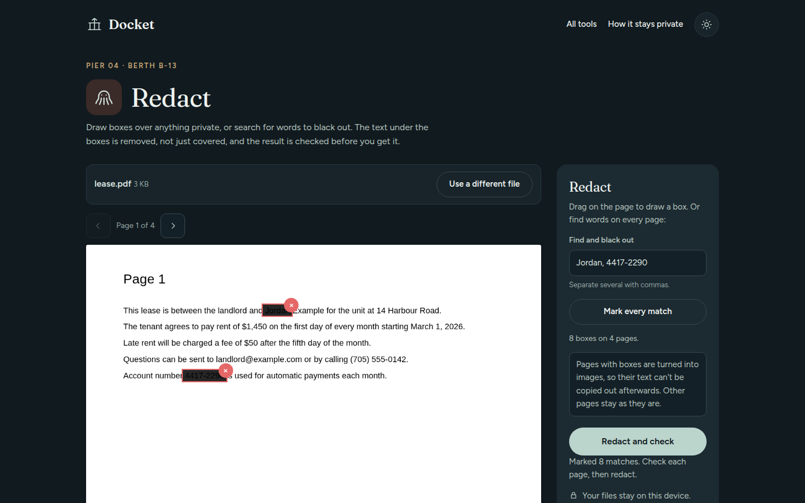
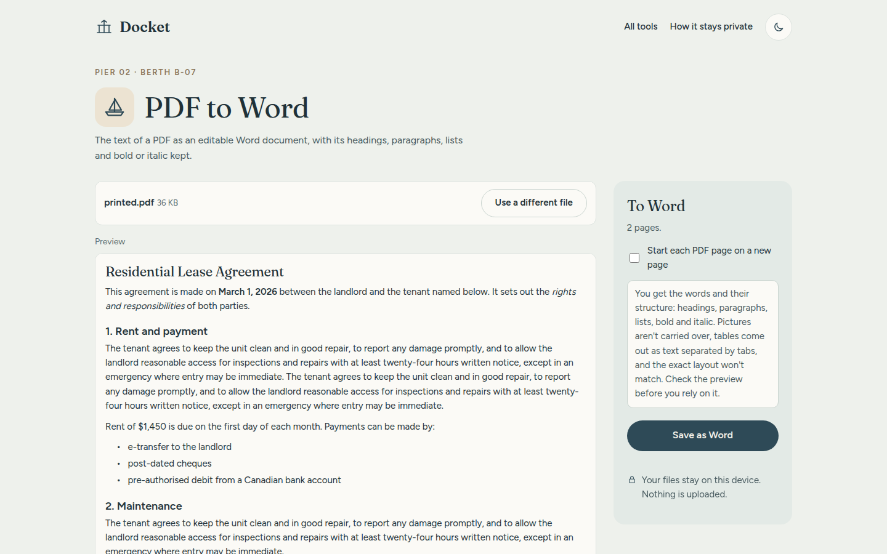
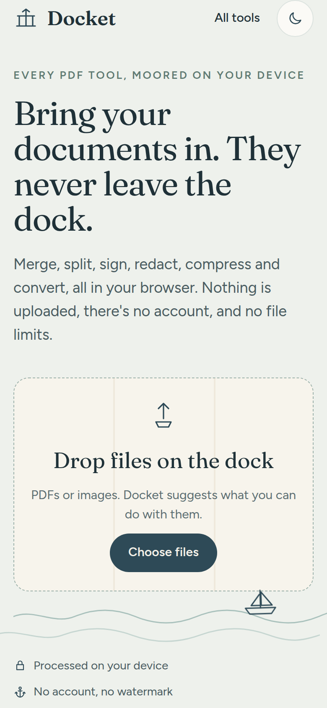

What it does
Most free PDF sites upload your file to their server to do something your own computer could do in a second. That's fine for a menu. It isn't fine for a lease, a pay stub or a bank statement, which are exactly the files people need to merge, sign or shrink. Docket does every job on your device. Open the page, drop a file on the dock, and it suggests what you can do with it.
The tools sit on seven "piers": Organise, Convert, Edit and sign, Protect, Shrink, Read, and Images and extras. The theme is a quiet harbour, with a night mode and a small boat bobbing on the waterline.
Redaction that's checked, not trusted
The classic redaction mistake is drawing a black box over text that's still there underneath, so anyone can copy it out. Docket redraws each marked page as an image with the boxes burned in, then reads the finished file back. If any redacted word can still be found anywhere in it, nothing is saved.

That check had a blind spot, and testing found it. Searching a page for "Jordan" drew a box that stopped short of the "n". The check passed, because it reads text, and the text was gone, but the letter was still visible in the picture. The box width had been estimated from the number of characters, which is wrong for proportional fonts. It's now measured from the real font, with padding, and the page asks you to look over every box before saving.
Getting structure back out of a PDF
A PDF doesn't store paragraphs or headings, only where each scrap of text is drawn. To convert one to Word, Docket works backwards: pieces on the same baseline make a line, close lines make a paragraph, larger or bold lines on their own become headings, and indented runs of short lines become lists. Headers, footers and page numbers that repeat on every page are dropped, words hyphenated across a line are joined, and two-column pages are read one column at a time. Bold and italic come from the fonts' names, pictures come along, placed between the paragraphs they sat between, and rows whose cells line up become real Word tables.

The Word file is written by about 100 lines of code rather than a 400 KB library, and it passes validation against the official Office Open XML schema. On a two-page lease printed from a browser, with a running header, page numbers and drawn bullets, all 18 paragraphs and 5 headings came back exactly as written.
Compression that keeps the text
Most of a PDF's weight is usually its pictures. Compress decodes each large one, scales it to the level chosen, saves it again as a JPEG and puts it back in place, so the text stays sharp and selectable. On a 4.7 MB test page the three levels gave 270 KB, 65 KB and 14 KB, and the page looked the same: on average the pixels moved by about one shade in 255. Turning whole pages into pictures is still there, labelled as a last resort.
Heavier tools, loaded only when needed
Two jobs need more than JavaScript. Password protection uses qpdf compiled to WebAssembly (1.3 MB), and the locked file is opened twice before you get it: without the password it must refuse, with it it must open. Reading scanned pages uses Tesseract (about 7 MB, plus 0.7 MB for French), which writes the words it finds behind the scan as invisible text, so the page looks the same but can be searched. Scans fed in sideways read as nonsense, so those pages are tried at every quarter turn and the reading with the most confident real words wins. Neither download happens until someone opens that tool.
The results
The browser tests build their own PDFs, push them through every tool and check the output: page counts, text, form values, file sizes, that a locked file really needs its password, and that redacted words are really gone. QR codes are decoded back with a real QR reader. Writing them caught real bugs before anyone saw them: the summary silently dropping text near "e.g.", the tool search not filtering, PDF to Word treating every line as its own paragraph, and a drawn signature being wiped when you switched tabs.
On a phone

Limits
- PDF to Word rebuilds structure, not layout. Simple tables become Word tables; ones with merged or wrapped cells may come out as tab-separated text.
- Reading scans works for English and French print. Handwriting and blurry photos come out poorly, and unsure pages are named.
- Redact and Grayscale turn pages into images, so their text can't be selected afterwards. Each tool says so first.
- Signatures are pictures of a signature, like signing a printout, not certificate-based digital signatures.